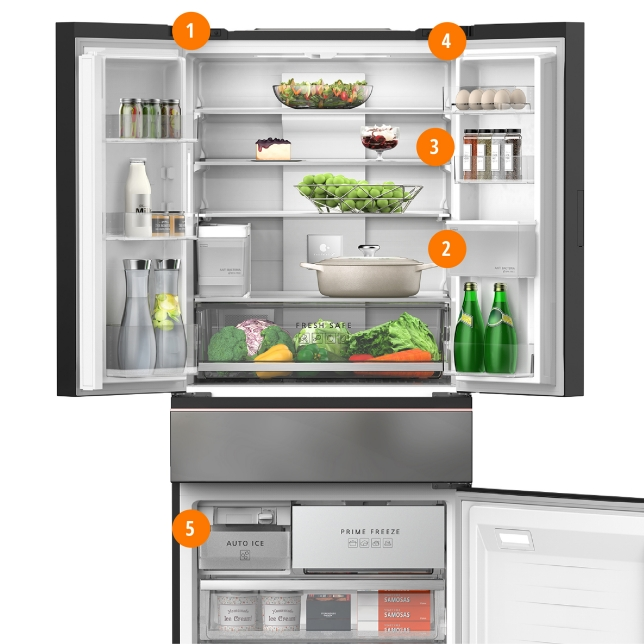

Back to menu
Back to menu Back to menu

Freezing Technology that Simplifies Your Routines Whether you are cooking for the family, friends or just yourself, eating well matters—especially in today is fast-changing world. Prime Freeze makes it easy to prepare and freeze healthy meals even during busy days.